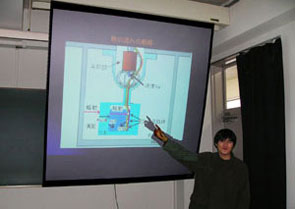
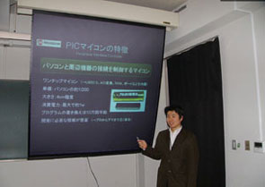
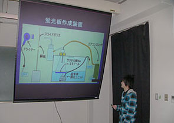
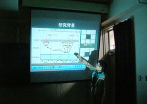

学部４年の４人の学部生が卒論発表会で発表（2007年2月）
学部４年の４人の学部生が卒論発表会で発表（2007年2月）
2月20日（火）に工学部知能物理工学科の卒論発表会が開かれ，中村研の学部４年の４人の学部生が発表を行ないました。
発表のタイトルは次の通りです。
◎木村 文陽「PICマイコンの物理計測への応用」
◎佐藤 友厚「真空紫外光検出のための蛍光板の製作」
◎宮本 健司「金属蒸着したBP-1ガラス製Ｘ線コリメータの研究」
|
2月20日（火）に工学部知能物理工学科の卒論発表会が開かれ，中村研の学部４年の４人の学部生が発表を行ないました。 発表のタイトルは次の通りです。 |
|
◎浦山 健太「キセノンの蒸気圧曲線の測定における誤差の評価」 ◎木村 文陽「PICマイコンの物理計測への応用」 ◎佐藤 友厚「真空紫外光検出のための蛍光板の製作」 ◎宮本 健司「金属蒸着したBP-1ガラス製Ｘ線コリメータの研究」 |
|  |  |
|  |  |